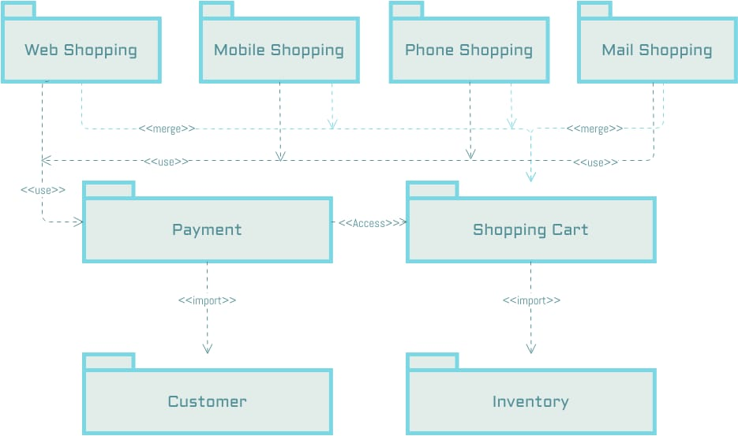
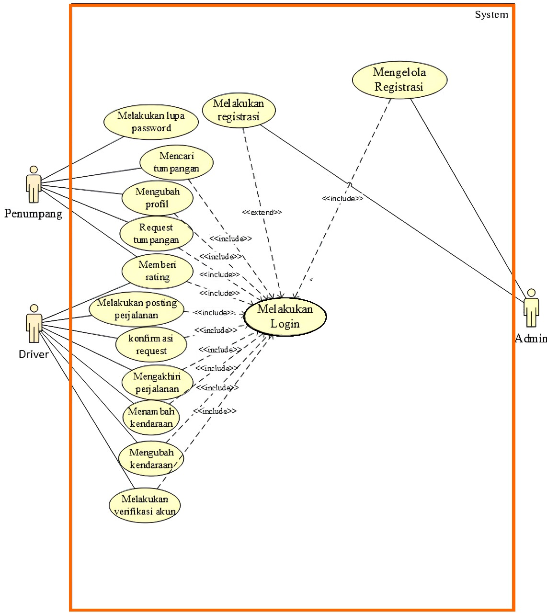

Package Diagram
Definisi
Diagram paket (package diagram) dalam UML digunakan untuk menggambarkan struktur organisasi dan hubungan antar paket dalam suatu sistem perangkat lunak. Diagram ini menyajikan paket-paket sebagai wadah logis untuk menyimpan dan mengelompokkan elemen-elemen perangkat lunak seperti kelas, interface, atau komponen. Tujuannya adalah untuk menyederhanakan kompleksitas sistem dengan mengelompokkan elemen-elemen terkait ke dalam paket-paket yang saling terkait, memfasilitasi pemahaman struktur sistem secara keseluruhan, dan memudahkan komunikasi antar tim pengembangan.
Fungsi
- Organisasi Struktur: Menyajikan secara visual bagaimana elemen-elemen perangkat lunak diorganisir ke dalam paket-paket.
- Hubungan Antar Paket: Menunjukkan hubungan dan ketergantungan antara paket-paket, seperti ketergantungan penggunaan, ketergantungan generalisasi, atau ketergantungan impor.
- Sederhanakan Kompleksitas: Mengelompokkan elemen-elemen terkait ke dalam paket-paket yang saling terkait untuk menyederhanakan kompleksitas sistem.
- Pemahaman Struktur Sistem: Memfasilitasi pemahaman struktur sistem secara keseluruhan bagi pengembang dan pemangku kepentingan.
- Komunikasi Tim Pengembangan: Memudahkan komunikasi antar anggota tim pengembangan dengan menyediakan pandangan tingkat tinggi tentang struktur sistem.
- Pemeliharaan dan Evolusi: Membantu dalam pemeliharaan dan evolusi sistem seiring waktu dengan memudahkan identifikasi dan pengelolaan elemen-elemen perangkat lunak.
Diagram dan Penjelasan
Contoh Package Diagram

Penjelasan
Gambar diatas adalah paket utama yang memuat seluruh aplikasi. Paket ini berfungsi sebagai wadah untuk semua komponen utama aplikasi. Paket tersebut antara lain :
- Paket (Package): Merupakan kumpulan elemen-elemen yang saling terkait, seperti kelas, interface, dan subpaket. Paket digunakan untuk mengorganisir elemen-elemen tersebut menjadi unit yang lebih besar.
- Elemen-Elemen dalam Paket: Ini bisa berupa kelas, interface, atau komponen lain yang dikelompokkan bersama dalam satu paket.
- Relasi Paket (Package Relationship): Menunjukkan hubungan antara paket-paket dalam sistem. Beberapa relasi paket yang umum adalah dependensi, generalisasi, dan asosiasi.
- Dependensi (Dependency): Menunjukkan bahwa suatu paket bergantung pada paket lain untuk melaksanakan fungsinya. Jika perubahan terjadi pada paket yang bergantung, dapat memengaruhi paket yang tergantung.
- Generalisasi (Generalization): Menunjukkan bahwa satu paket merupakan perluasan dari paket lain, mirip dengan hubungan pewarisan dalam pemrograman berorientasi objek.
- Asosiasi (Association): Menunjukkan keterhubungan antara dua paket untuk mencapai suatu tujuan tertentu, tanpa bergantung pada satu sama lain secara langsung.
Skenario
Contoh Skenario
